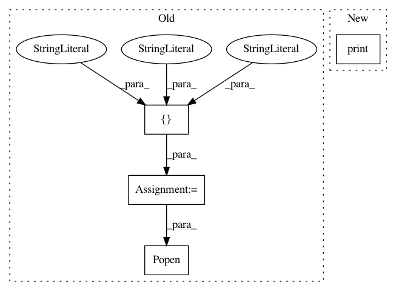

dd4ebd98a0026f626242f30cf9688d61b4798af1,mltsp/custom_feature_tools.py,,extract_feats_in_docker_container,#Any#Any#,434
Before Change
// Spin up Docker contain and extract custom feats
cmd = ["docker", "run",
"-v", "%s:/home/mltsp" % cfg.PROJECT_PATH,
"--name=%s" % container_name,
"mltsp/extract_custom_feats"]
process = Popen(cmd, stdout=PIPE, stderr=PIPE)
// Grab outputs
stdout, stderr = process.communicate()
if str(stderr).strip() != "" and stderr != b"":
print("\n\ndocker container stderr:\n\n", str(stderr).strip(), "\n\n")
After Change
ridc.docker_copy(client, cont_id, "/tmp/results_list_of_dict.pkl",
target=path_to_tmp_dir)
print("/tmp/results_list_of_dict.pkl copied to host machine.")
// Load pickled results data
with open(os.path.join(path_to_tmp_dir, "results_list_of_dict.pkl"),
"rb") as f:
results_list_of_dict = pickle.load(f)
In pattern: SUPERPATTERN
Frequency: 3
Non-data size: 4
Instances
Project Name: cesium-ml/cesium
Commit Name: dd4ebd98a0026f626242f30cf9688d61b4798af1
Time: 2015-02-27
Author: a.crellinquick@gmail.com
File Name: mltsp/custom_feature_tools.py
Class Name:
Method Name: extract_feats_in_docker_container
Project Name: deepchem/deepchem
Commit Name: 763f8721952e8042d6086b103deb2450334be4b3
Time: 2017-03-09
Author: lilleswing@gmail.com
File Name: deepchem/feat/nnscore_utils.py
Class Name:
Method Name: pdbqt_to_pdb
Project Name: cesium-ml/cesium
Commit Name: dd4ebd98a0026f626242f30cf9688d61b4798af1
Time: 2015-02-27
Author: a.crellinquick@gmail.com
File Name: mltsp/run_in_docker_container.py
Class Name:
Method Name: disco_test